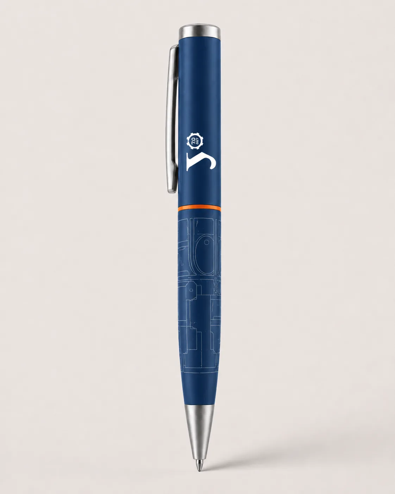
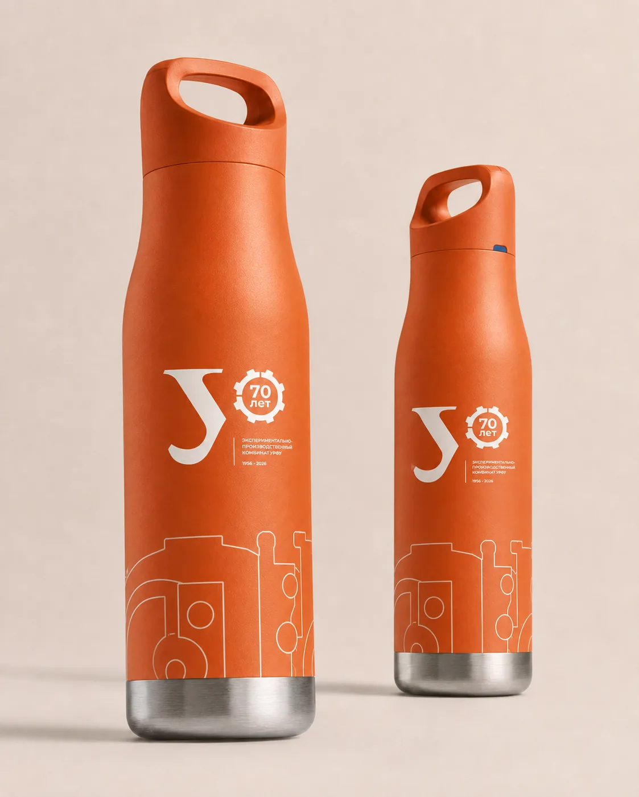
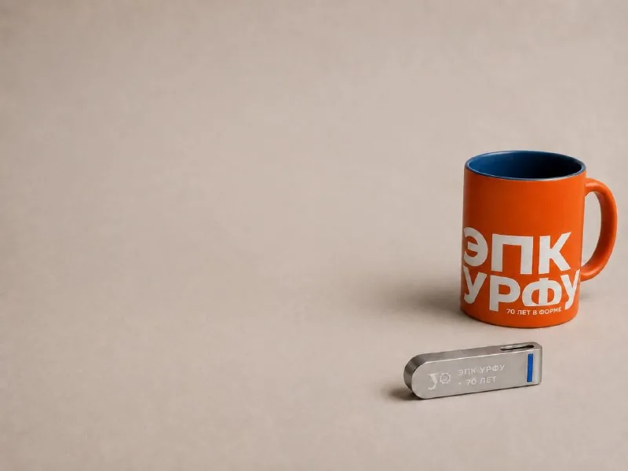

Награды, мерч, цифра
То, что сотрудник унесёт домой — и наденет на себя
ГРАМОТА A4
IMG-01
IMG-01
Официальные
Почётная грамота
Место под ФИО, должность, подпись и печать. Редактируемый шаблон для отдела кадров.

Мерч
Блокнот
Твёрдая обложка, знак на лице, первый разворот «70 лет. 1956–2026».

Мерч
Ручка
Монохромная версия знака, читается на площади 40 мм. Вариант под лазерную гравировку.

Мерч
Термос
Знак и графичный контур производства на корпусе — берут в дорогу и в цех каждый день.

Официальные
Ежедневник «70 лет точной работы»
Премиальный формат для руководителей и партнёров.

Мерч
Кружка и флешка
Повседневные предметы на рабочем столе — знак читается даже в самом маленьком формате.
ШЕВРОН
IMG-04
IMG-04
Мерч
Шеврон
Носят на плече каждую смену — самый сильный носитель юбилея. 3 цвета вышивки.
СОЦСЕТИ
IMG-05
IMG-05
Цифра
Digital-пакет
Обложки соцсетей, открытка-поздравление, шаблон презентации, подпись в почте.
Наведите курсор (на телефоне — коснитесь карточки), чтобы увидеть детали.